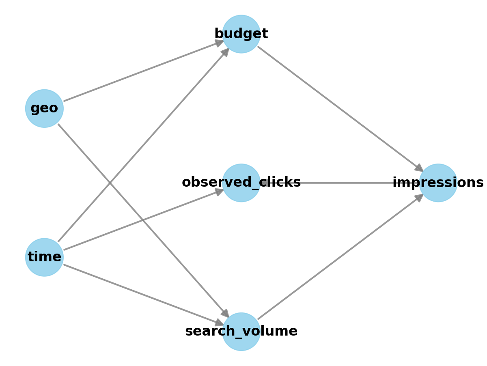
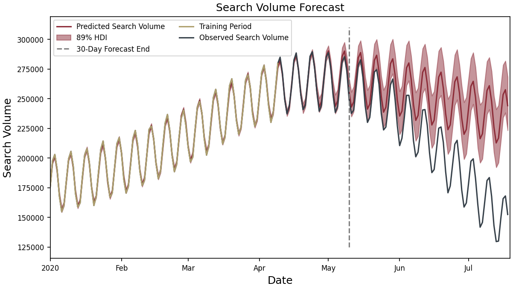

Search Forecasting
A Robust Statistical Approach
This document presents a formal analysis of our probabilistic search advertising model, demonstrating how it effectively captures the relationship between marketing expenditure and business outcomes. Using synthetic data that mirrors real-world advertising patterns, we illustrate the model’s structure, statistical properties, and practical applications for optimizing advertising investments.
Introduction: The Search Advertising Journey
Search advertising represents a complex ecosystem where multiple factors interact to determine your business outcomes. At its core, the process follows this path:
- Users search for terms related to your products or services
- Your budget competes for visibility among these searches
- Impressions are generated when your ads appear in search results
- Users click on a portion of these impressions, driving traffic to your site
While this flow seems straightforward, accurately modeling and predicting these relationships is challenging. Traditional approaches often make simplistic assumptions that don’t capture real-world complexities:
- Linear models incorrectly assume doubling your budget doubles your results
- Single-factor models miss the interplay between seasonality, geography, and competition
- Deterministic approaches fail to account for inherent uncertainty in user behavior
Our Bayesian hierarchical model overcomes these limitations by respecting the true causal structure of search advertising and quantifying uncertainty at each step.
The Causal Structure: Understanding What Drives What
The foundation of our model is a causal graph that represents how different variables influence each other:
This causal structure encodes several key insights:
- Search volume is determined by time (seasonality) and geographic factors, not by your budget
- Budget directly influences impressions but has no direct effect on search volume
- Impressions are constrained by both budget and available search volume
- Clicks come only from impressions, with rates influenced by time and geography
This separation of factors you control (budget) from those you don’t (market demand) provides clarity about what marketing levers you can pull and their expected effects.
The Data: What We’re Modeling
To demonstrate the model, let’s examine some synthetic data that captures typical patterns in search advertising:
The Market Opportunity
Search volume represents the total market opportunity—how many people are searching for relevant terms. Notice in Figure 2:
- Annual seasonality: In this example, peak volume occurs around April-May with lowest volume in September
- Weekly cycles: Regular oscillations show higher weekday searches and weekend drops
- These patterns exist regardless of your advertising budget
Your Strategic Decisions
Budget allocation shows how you’re distributing your advertising spend:
- Varying levels across different geographic regions
- Seasonal adjustments that often (but not always) mirror search volume patterns
- Strategic pauses where budget drops to zero in specific regions
Your Market Visibility
Impressions represent how many times your ads appear in search results:
- Seasonal patterns similar to search volume
- Sharp drops to zero when budget is paused
- Immediate recovery when budget resumes
Your success rate
Observed clicks tend to have a seasonal and yearly patternd driven by the effects of search volume, search impressions and consumer behaviors. Notice:
- Clicks drop to zero when impressions drop to zero
- Strong seasonal patterns are present at both weekly and yearly levels
The Budget-Results Relationship: Diminishing Returns
The relationship between budget and results (clicks/impressions) is clearly non-linear:
- Initial slow growth: At low budget levels (100-200), each additional dollar yields modest increases
- Acceleration phase: At middle budget ranges (200-300), returns improve
- Diminishing returns: At higher levels (400+), additional spending faces decreasing efficiency
- Variability: Even at the same budget level, results vary due to seasonal factors
This non-linear pattern reflects real-world marketplace dynamics, where competition and saturation limit the effectiveness of additional spending.

The Model Structure: Four Interconnected Components
Our forecasting system models this process through 4 interconnected components, each with its own statistical approach:
- Defining Inputs and Statistical Controls
- Build components for seasonality and trends
- Account for different base levels for different geographies
- Add noise to account for shocks
- Search Volume Forecasting
- Projects underlying market demand independent of your advertising
- Accounts for both weekly cycles and yearly seasonality
- Adjusts for geographic differences in search behavior
- Impression Generation
- Models how your budget converts search volume into impressions
- Captures the “hill function” effect where budget increases face diminishing returns
- Identifies periods of zero impressions when budget is paused
- Click-Through Prediction
- Estimates conversion from impressions to valuable clicks
- Accounts for seasonal variations in consumer engagement
- Reflects geographic differences in click behavior
1. Defining Inputs and Statistical Controls
Looking at the causal graph (Figure 1), we can see how information flows through the model:
- External Factors First: Time and geography are the foundation variables that influence everything else
- Search Volume Generation: These external factors determine how many people search for relevant terms
- Budget Allocation: Your marketing spend determines what portion of searches become impressions
- Conversion Process: Impressions then convert to clicks based on various factors
This structure accurately represents real-world advertising dynamics where you can control your budget but not consumer search behavior.
# Date to be used as a time index in the model
time_data = Data('time', dims=('date'))
# Budget to be used as a covariate in the model
budget_data = Data('budget', dims=('date', 'geo'))Statistical controls can be used when data or theory is not available to ascribe cause to any particular variable. They allow use to seperate noise and things outside our control from the factors we are interested in studying (budget allocation). If theory suggests other explanatory variables for which data is available that explain the variation in the data they should be used instead.
# Length scale prior for the long-term periodicity
# The length scale defines the smoothness of the periodic function
# A small length scale means that the function will vary quickly,
# while a large length scale means that the function will vary slowly
# The length scale is a hyperparameter that can be learned from the data
# Because the length scale is positive, we use a gamma prior
ls_long_periodic = Prior(
'ls_lp',
prior_name="Gamma",
alpha=1,
beta=1/5
)
# Scale prior for the long-term periodicity
# The scale defines the amplitude of the periodic function
# A small scale means that the function will be small,
# while a large scale means that the function will be large
# The scale is a hyperparameter that can be learned from the data
# Because the scale is positive and it may be large, we use an exponential prior
scale_long_periodic = Prior(
'scale_lp',
prior_name="Exponential",
lam=1/100.0)
# A Gaussian process prior for the long-term periodicity
# This prior is used to model time-varying effects
# This allows for the model to capture long-term trends in the data
long_periodic = HSGPPeriodic(
"long_term_periodic",
m=40, # Rank of the GP approximation
ls=ls_long_periodic,
scale=scale_long_periodic,
dims=('date', 'geo'), # Varies by date and geo
period=365 # yearly
)# Hyperparameters for the long-term periodicity prior for CTR
ls_long_periodic_ctr = Prior(
"ls_lp_ctr",
prior_name="Gamma",
alpha=1,
beta=1/5
)
scale_long_periodic_ctr = Prior(
"scale_lp_ctr",
prior_name="Exponential",
lam=1
)
long_periodic_ctr = HSGPPeriodic(
"long_term_periodic_ctr",
m=40,
ls=ls_long_periodic_ctr,
scale=scale_long_periodic_ctr,
dims=('date', 'geo'),
period=365 # yearly
)# Weekly periodic component
weekly_periodic = WeeklyFourier(
name='weekly_periodic',
n_order=3, # Number of Fourier basis functions to use
prefix='weekly_search_volume',
dims=('date',)
)ls_short_periodic = Prior("ls_sp", prior_name="Gamma", alpha=1, beta=1/30)
scale_short_periodic = Prior("scale_sp", prior_name="Exponential", lam=1)
short_periodic_ctr= HSGPPeriodic(
"short_term_periodic_ctr",
m=40,
ls=ls_long_periodic,
scale=scale_long_periodic,
dims=('date', 'geo'),
period=7 # weekly
)# Average search volume over all geographies
mean_search_volume = Prior(
"base_volume_mu",
prior_name="Normal",
mu=22000,
sigma=8000
)
# Hyperparameters for the amount of pooling between geographies
amount_of_pooling_volume = Prior(
"base_volume_sigma",
prior_name="HalfNormal",
sigma=500
)
# Random effects by geo for the search volume
volume_random_effects = Prior(
"base_volume_random_effects",
prior_name="Normal",
mu=0,
sigma=amount_of_pooling_volume,
dims=('geo',)
)
base_volume = (mean_search_volume + volume_random_effects)daily_geo_shocks_search_volume = Prior(
"daily_geo_shocks_search_volume",
prior_name="Normal",
mu=0,
sigma=Prior(
"daily_geo_shocks_search_volume_scale",
prior_name="HalfCauchy",
beta=1
),
dims=('date', 'geo')
)2. Search Volume Component
This predicts the underlying market demand:
- Base Volume: A normal distribution representing the average search volume for each geographic region Code 6
- Temporal Patterns:
- Geographic Variations: Random effects that account for differences between markets Code 6
- Daily Shocks: Random variations that capture unexpected search behavior fluctuations Code 7
The model assumes search volume follows a Poisson distribution, which is ideal for count data and allows for appropriate variance as volume increases. Code 9
# The mean search volume must be positive, so we use a softplus transformation
# an exponential transformation could also be used but then all the priors must be
# in the log domain
# The softplus transformation is a smooth approximation of the ReLU function
search_volume_lam = ((
long_periodic
+ weekly_periodic
+ base_volume
+ daily_geo_shocks_search_volume
)(time_data)).transform(pt.softplus)with pm.Model(coords=coords) as search_model:
lam = handle_dims(
search_volume_lam.apply(time_index),
search_volume_lam._dims,
("date", "geo")
)
search_volume_obs = pm.Poisson(
"search_volume_obs",
mu=lam,
dims=("date", "geo"),
)
Key assumptions and justifications:
- Poisson distribution for search volume: Appropriate for count data with variance proportional to the mean
- Gaussian Process priors for seasonality: Allows flexible modeling of complex patterns without rigid assumptions
- Hierarchical structure for geographic effects: Shares information across regions while allowing for differences
- Additive components: Each factor (weekly patterns, yearly seasonality, etc.) contributes independently to the overall trend


3. Impression Generation Model
This component converts search volume to impressions based on your budget:
- Budget Effect: Uses a weighted hill function (shown in the code as
budget_transform(multiplier, competitor_pressure, budget)Code 11) - Competitor Pressure: A Half-Cauchy distribution parameter that models how difficult it is to win impressions Code 10
- Impression Rate: The probability that a search will result in your ad being shown Code 12
- Final Impressions: Modeled as a Binomial distribution (either shown or not shown) Code 13
This structure captures the diminishing returns seen in Figure 6, Figure 7, where doubling your budget doesn’t double your results.
# The max precentage of search volume that can be converted to impressions
# Must be between 0 and 1
multiplier = Prior(
"search_volume_multiplier",
prior_name="Beta",
alpha=0.5,
beta=0.5,
dims=tuple()
)
# The average competitive pressure for bidded keywords
# This can be modeled by keword category, by geo and time
# It is assumed constant for simplicity
# Must be positive but can be large
competitor_pressure = Prior(
"competitor_pressure",
prior_name="HalfCauchy",
beta=1,
dims=tuple()
)def budget_transform(multiplier, competitor_pressure, budget):
numerator = multiplier * budget
denominator = budget + competitor_pressure
return numerator / denominatorimpression_rate = budget_transform(
multiplier=multiplier,
competitor_pressure=competitor_pressure,
budget=budget_data
)with search_model:
imp_rate = handle_dims(
impression_rate.apply(obs_budget_data),
impression_rate._dims,
("date", "geo"))
impressions_obs = pm.Binomial(
"impressions_obs",
n=search_volume_obs,
p=imp_rate,
dims=("date", "geo"),
)
Key assumptions and justifications:
- Hill function for budget effects: Creates an S-shaped curve that realistically models marketplace dynamics
- Competitor pressure parameter: Captures how difficult it is to win impression share in competitive markets
- Binomial distribution for impressions: Models the binary outcome (shown/not shown) for each potential search
- Upper bound constrained by search volume: You can’t get more impressions than there are searches

4. Click-Through Rate Model
This predicts how impressions convert to clicks:
- Base CTR: The fundamental click probability Code 14
- Temporal CTR Patterns:
- Final Clicks: Modeled as a Binomial distribution based on these probabilities Code 15
base_ctr = Prior(
"base_ctr",
prior_name="Normal",
mu=0,
sigma=1
)
noise = Prior(
"ctr_noise",
prior_name="Normal",
sigma=Prior(
"ctr_noise_scale",
prior_name="HalfNormal",
sigma=.01,
dims=tuple()
),
dims=("date",)
)
ctr = ((
short_periodic_ctr
+ long_periodic_ctr
+ base_ctr
+ noise
)(time_data)
).transform(pt.sigmoid)with search_model:
ctr = handle_dims(
ctr.apply(obs_budget_data),
ctr._dims,
("date", "geo"))
clicks_obs = pm.Binomial(
"clicks_obs",
n=impressions_obs,
p=ctr,
dims=("date", "geo"),
)
Key assumptions and justifications:
- Sigmoid transformation: Ensures click probabilities stay between 0 and 1
- Binomial distribution for clicks: Models the binary outcome (clicked/not clicked) for each impression
- Temporal components: Captures how user behavior varies by day of week and season
- Hierarchical structure: Allows for geographic differences in click behavior

The Complete Probabilistic Model
The full model integrates all these components in a Bayesian framework:

This probabilistic approach offers several advantages:
- Uncertainty quantification: Provides confidence intervals around predictions
- Parameter learning: Infers key parameters like competitor pressure from your historical data
- Future forecasting: Projects expected performance under different budget scenarios
- Anomaly detection: Identifies when performance diverges from expectations
Fitting the Model
def partial_observe(model, obs_data, input_data, coords, target_accept=.70):
with pm.observe(model, obs_data):
pm.set_data(input_data, coords=coords)
trace = pm.sample(1000, tune=1000, target_accept=target_accept, nuts_sampler='nutpie')
return trace
search_volume_trace = partial_observe(
search_model,
{'search_volume_obs': train_data.search_volume.values,
'impressions_obs': train_data.impressions.values,
'clicks_obs': train_data.observed_clicks.values},
{'time': train_data['time'].values,
'budget': train_data.budget.values},
coords,
target_accept=.95
)Sampler Progress
Total Chains: 4
Active Chains: 0
Finished Chains: 4
Sampling for 5 minutes
Estimated Time to Completion: now
| Progress | Draws | Divergences | Step Size | Gradients/Draw |
|---|---|---|---|---|
| 2000 | 0 | 0.03 | 1023 | |
| 2000 | 0 | 0.02 | 1023 | |
| 2000 | 0 | 0.03 | 1023 | |
| 2000 | 0 | 0.03 | 127 |
search_volume_pred = predict_full_period(search_volume_trace)Sampling: [clicks_obs, ctr_noise, daily_geo_shocks_search_volume, impressions_obs, search_volume_obs]Forecast Results



| mean | sd | hdi_3% | hdi_97% | mcse_mean | mcse_sd | ess_bulk | ess_tail | r_hat | |
|---|---|---|---|---|---|---|---|---|---|
| search_volume_multiplier | 0.251 | 0.002 | 0.248 | 0.254 | 0.000 | 0.00 | 599.0 | 893.0 | 1.01 |
| competitor_pressure | 30.320 | 0.415 | 29.569 | 31.139 | 0.017 | 0.01 | 592.0 | 899.0 | 1.01 |
Model Updates
train_data = data.isel(date=slice(None, 200))
updated_coords = {
"date": train_data.date.values,
"geo": train_data.geo.values
}
updated_search_volume_trace = partial_observe(
search_model,
{'search_volume_obs': train_data.search_volume.values,
'impressions_obs': train_data.impressions.values,
'clicks_obs': train_data.observed_clicks.values},
{'time': train_data['time'].values,
'budget': train_data.budget.values},
updated_coords,
target_accept=.95
)Sampler Progress
Total Chains: 4
Active Chains: 0
Finished Chains: 4
Sampling for 8 minutes
Estimated Time to Completion: now
| Progress | Draws | Divergences | Step Size | Gradients/Draw |
|---|---|---|---|---|
| 2000 | 0 | 0.03 | 127 | |
| 2000 | 0 | 0.03 | 1023 | |
| 2000 | 0 | 0.03 | 127 | |
| 2000 | 0 | 0.02 | 1023 |
updated_search_volume_pred = predict_full_period(updated_search_volume_trace)Sampling: [clicks_obs, ctr_noise, daily_geo_shocks_search_volume, impressions_obs, search_volume_obs]
Practical Applications: Optimizing Your Strategy
This model supports several critical business decisions:
Budget Optimization
- Finding the inflection point: Identify where additional spending faces significantly diminishing returns
- Scenario testing: Predict outcomes from different budget levels before committing resources
Geographic Allocation
- Market efficiency comparison: Identify which regions provide better returns on ad spend
- Reallocation strategies: Shift budget from saturated to more responsive markets
Seasonal Planning
- Preemptive adjustments: Increase budget before seasonal demand spikes
- Efficiency preservation: Reduce spending during predictable low-volume periods
Anomaly Detection
- Performance monitoring: Identify when actual results deviate from expectations
- Competitive intelligence: Detect when marketplace dynamics change significantly
Limitations and Considerations
Like all models this one is wrong, so it is important to understand the assumptions this model makes:
Competitor behavior assumptions: The model assumes competitor pressure changes slowly; rapid competitive shifts may reduce forecast accuracy
Market disruptions: Major external events (like a pandemic) may invalidate historical patterns
New market limitations: Limited historical data for new geographic regions may reduce forecast accuracy initially
Attribution windows: The model assumes clicks are attributed to impressions within the same time window
This model is designed to be modular, so if any of these assumptions are violated in such a way that the model is no longer useful it can be ammended.
Next Steps: Implementing the Model
To implement this model for your business:
- Data integration: Connect your search advertising platform data
- Historical fitting: Train the model on your past performance
- Scenario planning: Test different budget allocation strategies
- Continuous refinement: Update the model as new data becomes available
Conclusion: The Value of Sophisticated Modeling
Traditional approaches to search advertising often rely on simplistic assumptions that don’t capture real-world complexity. This probabilistic model overcomes these limitations by:
- Respecting causal structure: Distinguishing what you control from what you don’t
- Capturing non-linearity: Modeling diminishing returns and saturation effects
- Accounting for uncertainty: Providing confidence intervals around predictions
- Integrating multiple factors: Combining seasonality, geography, and marketplace dynamics
This sophisticated approach provides more accurate forecasts and enables smarter budget allocation decisions across time periods and geographic markets.